Style guide
Colors
Spacing
Project page — left half
The same spots on every project page, in Figma pixels.
Project pages — top area and side column
The same on every project page (trac., Hamotzi, Lets Talk About It), in Figma pixels. A project can change some of them on its own page.
Phone rules
When and how big
- A screen held upright gets the phone version; a screen held sideways gets the computer version.
- The phone frames in Figma are 393 wide. On the phone, 1 Figma pixel (--u) = the screen width ÷ 393, so everything grows and shrinks with the phone.
- Each page keeps its phone layout in its own part (.phone-home, .phone-project, .phone-about-page); it only shows on the phone, and the computer version is hidden there.
- The content and the order follow the phone frame, even when they are different from the computer version.
Texts
- Running text (.phone-text): Carlito 16, capitals, line height 1.24. Never smaller than 12px on the screen.
- An empty line (1.24em) between paragraphs (.phone-new-paragraph).
- After a text, before the picture or box under it: an empty line more than in Figma (19.84), so the text doesn't touch what comes next.
- The details at the top (.phone-details): Carlito Bold 16, capitals, line height 0.98.
- Links (.phone-nav-link): DM Serif Display italic 16, in orange.
Project pages
- At the top: "More Cool Stuff", "Next Project" (to the next project in the list) and "About& Contact". On every project page they are on one line, 42 from the top (and "Cool stuff by Yael Lenga" on the home page is on the same line). They stay at the top of the screen, on a cream bar (.phone-nav-background, 95 tall), so the page scrolls under it.
- "More Cool Stuff" and "About& Contact" are two lines at most.
- "More Cool Stuff" (back home): the home page itself comes in, cut in two halves as tall as the screen: the right half from the top, the left half from the bottom. They sweep the page into the middle and together make up the home screen, and the home page opens (phone-back-home.js; the home page is read from index.html, and if it can't be read, just its four squares come in as two columns).
- The links at the bottom (prototype, website, presentation…) scroll with the page and open in a new tab.
- Colored folders (.phone-folder): corners rounded 4, with a cream tab cut-out over the top-left corner, stacked in the order of the Figma layers.
- Pictures exported from Figma have no background (transparent), so they sit on the boxes under them.
- Videos of screens play by themselves, with no sound. A video with sound (Hamotzi) has the play button and time bar; its enlarge button opens it full screen.
- Small screens under a big phone (trac.): tapping one grows a copy of it into the big phone, over the old one; the first one brings back the video. The same on the computer (phone-screens.js).
Home and about
- Home: a square for each project, two by two, and a yellow strip for the about page. Tapping a project brings in its two halves from the computer version; they sweep the page into the middle, meet, and the project opens. The strip grows to fill the screen, then the about page opens.
- About: the photos move slowly to the right, without end. Tapping leaves a stamp.
- No special mice and no hover effects on the phone.
Text styles
Home page
.handwriting
Cool stuff by
.scroll-down — "scroll" and "down" at the bottom of the first screen, across the middle; the wave on hover over either one plays on both (letter-roll.js), and so does a click on the floating picture
scroll down
.home-intro — the big text on the first screen (Fira Sans Condensed Bold 80): cream on the orange left half, orange on the cream right half
A graphic & digital designer
.project-label
trac.
ux\ui
app design
.project-year
2025
Project page
.project-handwriting
More Cool Stuff
.project-name
trac.
.project-header
A songwriting app for independent musicians
.project-title
too many versions
.project-bold-text
student project with mia gaon
.project-text
trac. is an app that keeps your songwriting organized while you keep creating.
.project-footer-item
Project pages
.top-links (hover each one)
The wave on hover (letter-roll.js) — every button in the handwriting-style font: move the mouse over it
With data-hover-text, another text comes up instead (home page: "Cool stuff by" → "Selected work", "Yael Lenga" → "more about me")
.side-year — side column: the year
2025
.side-detail — side column: the type and the credits
Student Project with Mia Gaon
.side-link — side column: "next project" (to the next project: trac. → Hamotzi → Lets Talk About It → trac.) and the links at the bottom
.side-title — side column: the title at the bottom
A songwriting app for independent musicians
.side-text — side column: the text at the bottom
trac. is an app that keeps your songwriting organized while you keep creating.
About page
.about-handwriting
Cool stuff by
.about-info
I’m a graphic & digital designer based in Tel Aviv.
And always holding a coffee.
.about-photos — photos of me in a rectangle; every 3 seconds the next one pushes the one before it out at the top (about-photos.js)
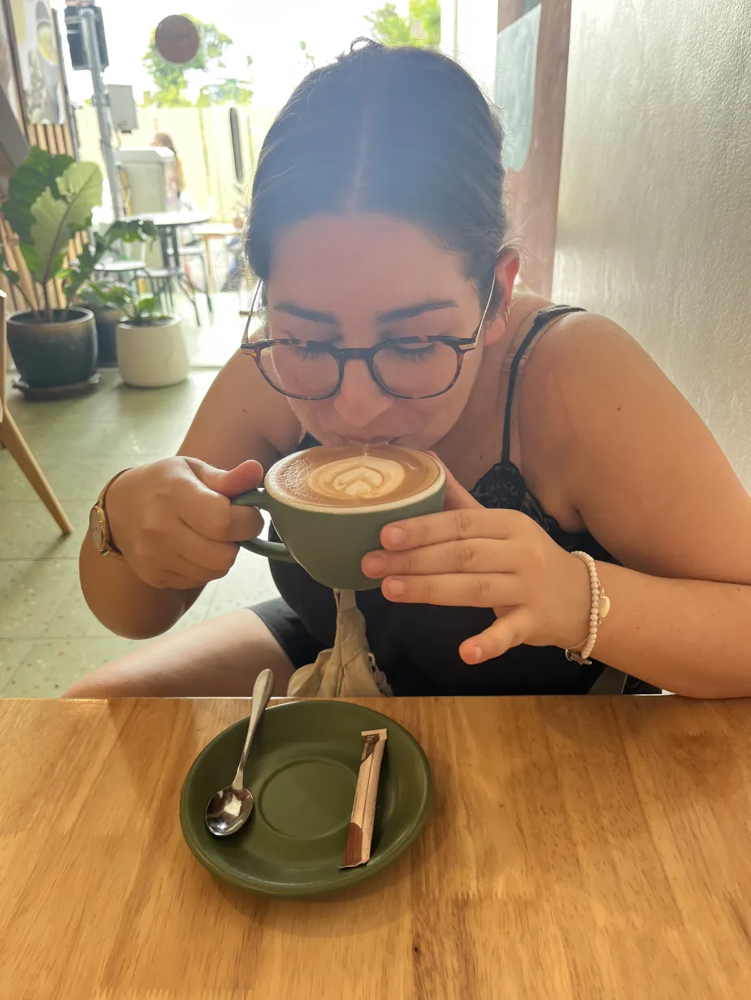
Process page
.process-title
Process
.entry-title
Week 1
Components
Work card
Navigation
Page header
Short
trac.
uX\uI
app design
2025
A songwriting app
An app for writing songs.
student project
Long
Lets talk about it
web&app design
illustration
branding
2026
A songwriting app for independent musicians who write everywhere
trac. is an app that keeps your songwriting organized while you keep creating. Write lyrics, capture ideas, record drafts, and build your projects without the usual mess in between. Everything stays in one place, from the first idea to the studio.
student project with mia gaon, startup course
Text block
Short
My part
I designed the visual language.
Long
too many versions
too many places
& too easy to lose
I designed this app end-to-end alongside a fellow designer friend. We shared responsibility across the process, from research and small-scale studies to ideation, prototyping, and defining the app’s visual language.
I took lead on key parts of the design process, in development of the visual language, designing the landing page, and building the final full-flow prototype.
Side column
Short
A songwriting app
An app for writing songs.
Long, with a text window and links
A songwriting app for independent musicians
trac. is an app that keeps your songwriting organized while you keep creating. Write lyrics, capture ideas, record drafts, and build your projects without the usual mess in between. When creating music, short or quick materials are created along the way. Musicians often keep these materials across many platforms.
I designed this app end-to-end alongside a fellow designer.
Video player buttons
On the computer, the play button is replaced by the mouse itself: over the video it becomes the word "play" or "pause" (what a click will do), in the handwriting-style font, the buttons' orange, as big as "next project" (.video-mouse-word, video-player.js). The play button below stays on the phone.
play pause
.video-time-bar (drag it on the Hamotzi page to move through the video)
Floating picture (home)
Floats around the first screen like the old DVD screen saver; at each edge it bounces back, changes to the next picture, and the screen changes to that picture's two colors. With the mouse over it, it freezes; clicking it plays the wave on "scroll down" (bouncing-picture.js).
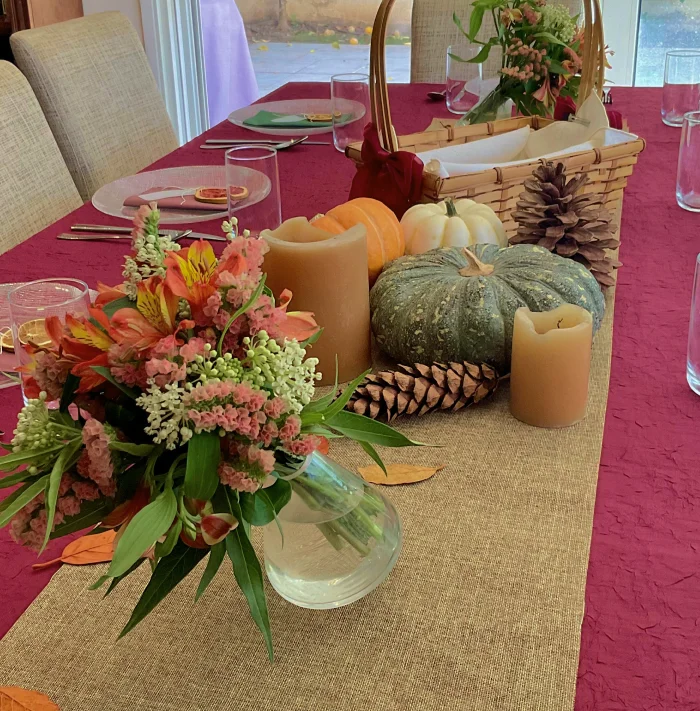
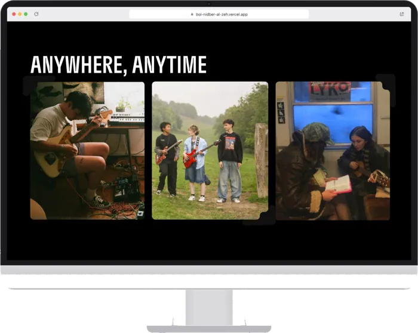
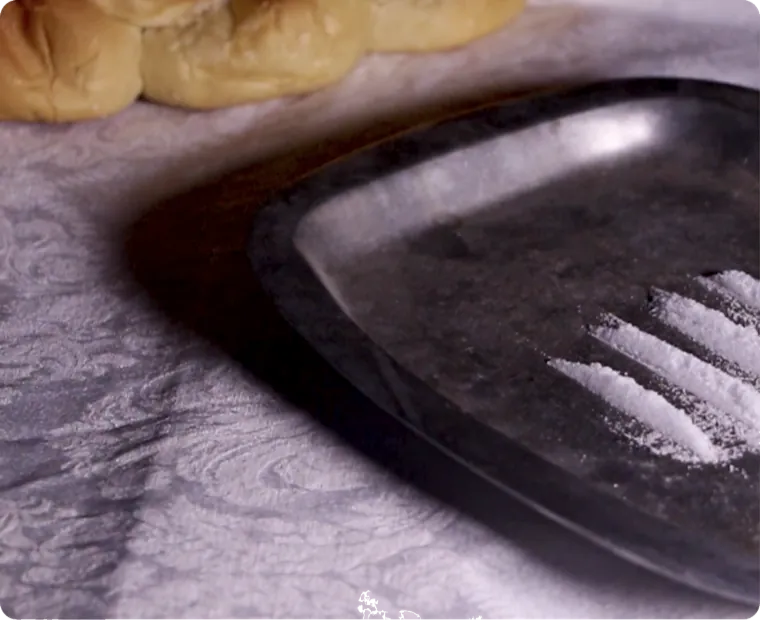
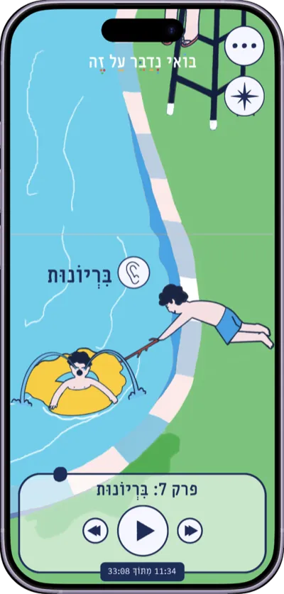
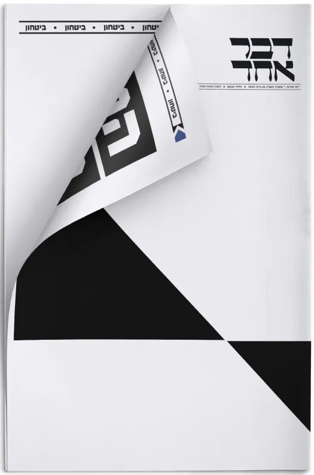
Home page on the phone
.phone-tile and .phone-about — tapping a square brings in the project's two halves from the computer version; they sweep the page into the middle and meet there, then the project opens. The yellow strip grows to fill the screen, then the about page opens (phone-home.js).
A graphic & digital designer who’s creative and makes complex designs feel effortless
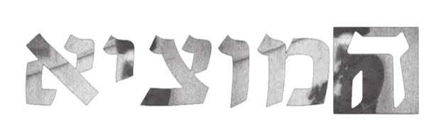
hamotzi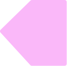
davar echad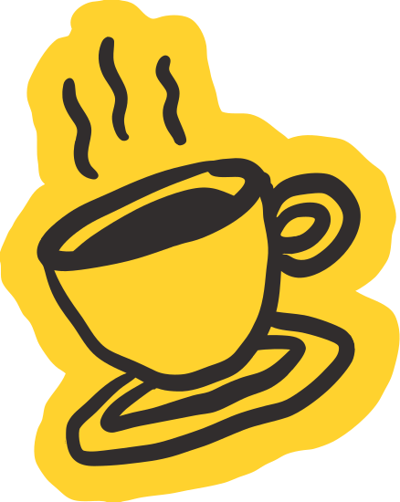
more about meProject page on the phone
.phone-nav-link (the links at the top and bottom, in the project's color; the top ones sit on .phone-nav-background, a cream rectangle across the top of the screen), .phone-details, .phone-text, and .phone-folder with .phone-folder-tab (a cream cut-out over its top-left corner). The small app screens (.phone-screen-thumb) swap what is in the big phone (.phone-screen-big): a copy of the tapped one grows into the big phone, over the old one; the first one brings back the video (phone-screens.js).
ux\ui
student project
2025
trac. is an app that keeps your songwriting organized while you keep creating.
Changing word
.word-swap — the words show one after the other, each for --word-swap-time (0.45s): beat, sound, track, song, verse, thing, demo, note.
Photo carousel (about, phone)
.phone-about-carousel — the six photos three times over; the row moves right by one set in --about-carousel-time (40s) and starts again.
Loader
Counts up to 100% while a page loads; at 100% the mouse picture shows for half a second, then the page opens.
The same loader shows inside the frame of a YouTube video (Hamotzi, Lets Talk About It) while the video loads (youtube-loader.js), with "video is loading" above the number; on Hamotzi, with a frame around the video's edges.
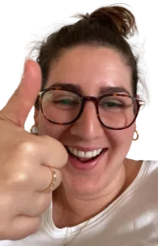
Hamotzi's video is the site's own file; if it hasn't started 10 seconds after pressing play, this note shows in its frame for 3 seconds, and then the same video comes up from YouTube, with the loader (video-backup.js).
Special mice
Each box shows the mouse picture at its real size. Move the mouse over it to try it.
.cursor-trac
.cursor-hamotzi
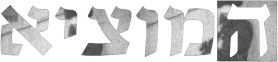
.cursor-lets-talk
.cursor-davar
.cursor-about
Stamps
.about-stamp — every click leaves a copy of the about mouse. It stays 3.5 seconds, then fades out over 2 seconds.
Click anywhere in this box